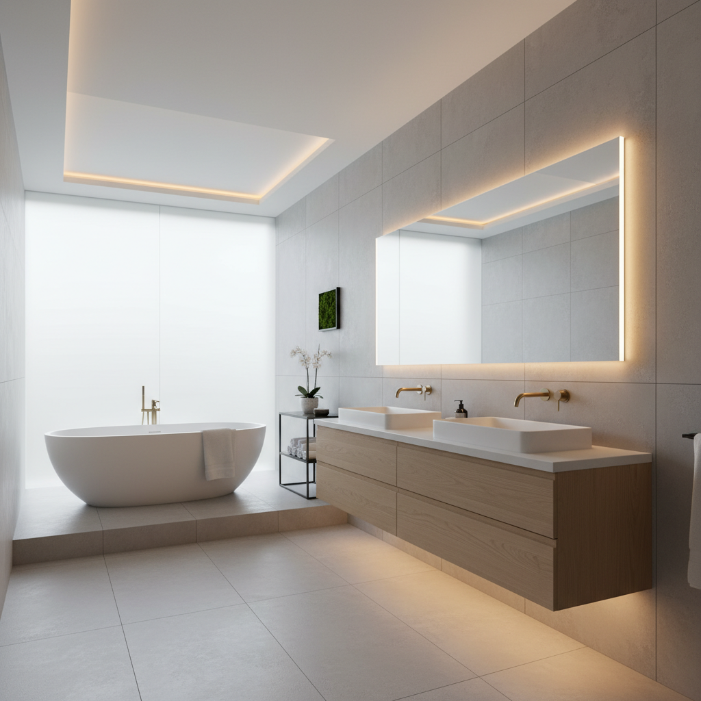
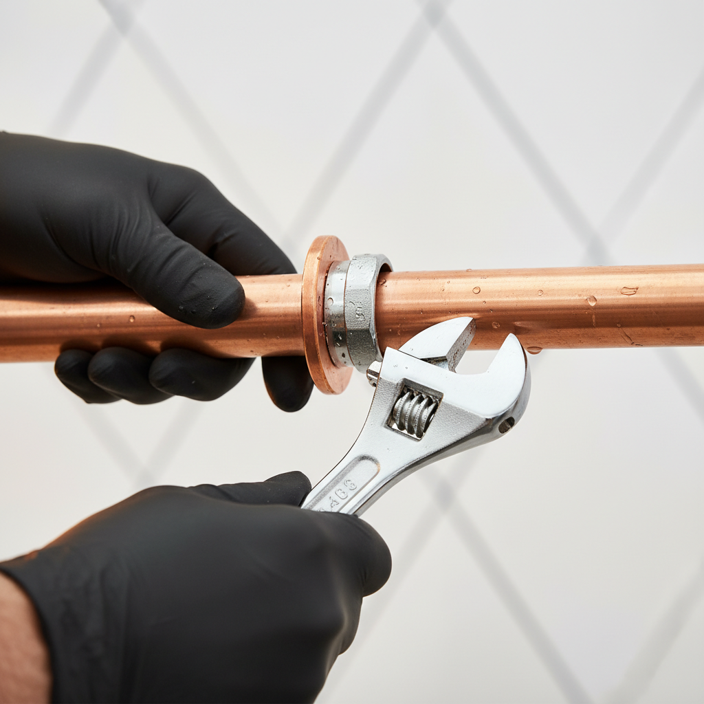
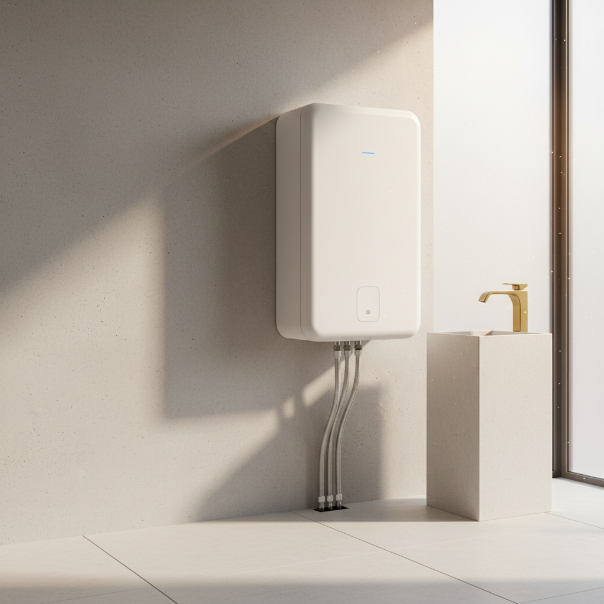
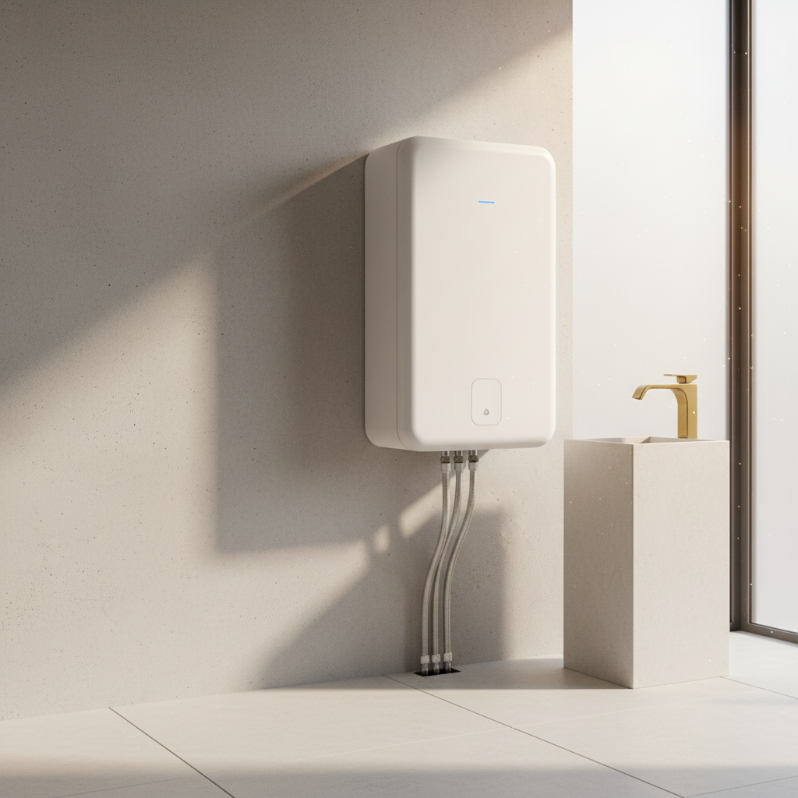
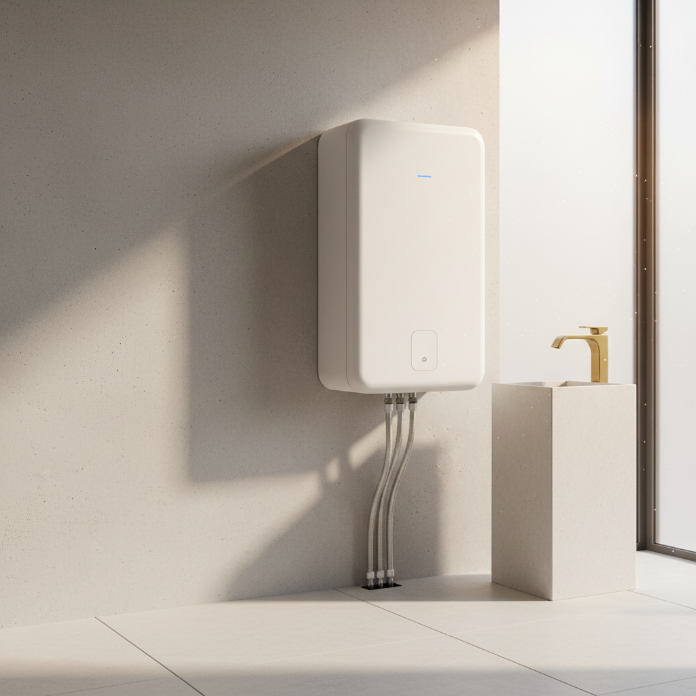

Unsere Projekte
Sehen Sie hier bald eine Auswahl unserer abgeschlossenen Projekte.
In Kürze finden Sie hier eine Galerie mit Vorher-Nachher-Bildern und Details zu unseren Arbeiten in den Bereichen Heizungsmodernisierung und Badsanierung.
Fragen Sie Ihr Projekt anProjekt-Impressionen




 

